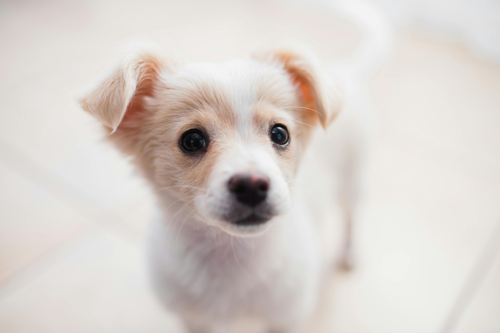

Bolinha (Cão)
Porte: Pequeno | Idade: 2 anos
Bolinha é super dócil e adora crianças. Resgatado em Fevereiro de 2025.
Candidatar-se para AdoçãoPorte: Pequeno | Idade: 2 anos
Bolinha é super dócil e adora crianças. Resgatado em Fevereiro de 2025.
Candidatar-se para Adoção
Porte: Médio | Idade: 6 meses
Mia é brincalhona e curiosa. Ideal para apartamentos. Precisa ser castrada.
Candidatar-se para AdoçãoPorte: Médio | Idade: 1 ano
Mel é carinhosa e adora brincar. Resgatada em Março de 2025.
Candidatar-se para AdoçãoPorte: Médio | Idade: 2 anos
Tom é tranquilo e afetuoso. Adora um colo e é ótimo com crianças.
Candidatar-se para Adoção
Porte: Grande | Idade: 3 anos
Thor é protetor e leal. Adora brincar e fazer companhia.
Candidatar-se para AdoçãoPorte: Médio | Idade: 6 meses
Dumbo é brincalhão e curioso. Ideal para apartamentos. Precisa ser castrado.
Candidatar-se para AdoçãoSe você não pode adotar, pode ser um anjo na vida de nossos resgatados. Temos diversas oportunidades, desde Lar Temporário até ajuda em eventos.
Toda ajuda é vital para custear alimentação, vacinas e procedimentos veterinários.
Progresso: R$ 2.500 arrecadados!
Realizar Doação Online (Futura Implementação)